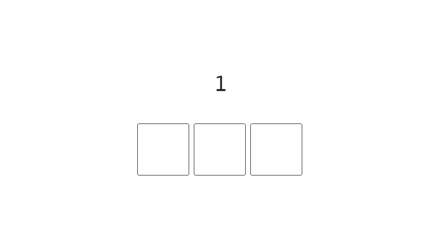

Mon 28 April 2025
Engineering Vibe
Like it or not, vibe coders are the next software engineers.
3 years ago I made a prediction that triggered a mixed response:
Within our lifetime. We will see a YouTuber or streamer becoming head of a state.
Me (March 4, 2022)
Whilst I don't believe this prediction has come true there's been progress. In June 2024 a Cypriot YouTuber was voted to become a member of the European Parliament, he earned 19.4% of the vote and earned 40% of votes from the 18-24 age group.1
The interesting thing about my prediction is that it seems that it's actually gone the other way. More politicians are becoming YouTubers and Streamers.
Could the same thing happen with vibe coders? Perhaps software engineers are the next vibe coders.
We like to bash
We see software engineers being dismissive at the content aimed at vibe coders. There's a new wave of people being introduced to coding and managing complexity; so most of the content is covering the basics. I.e. Write tests, compartmentalise and plan things out before you dive into the code.
This wave of programmers haven't had the time to digest The Mythical Man-Month to learn; upfront planning in software leads to a huge reduction in downstream costs. They are however learning the hard way, by hitting these challenges head on. (For better or worse).
How did you get here?
It's all a journey and we're at different stages of the process. A large overhead to programming is building up the vocabulary, this is the struggle for both early stage developers and vibe coders.2
Experienced programmers have been exposed to more language and can therefore provide more specificity when commanding the computer, vibe coders will get there. Perhaps this specificity makes the experienced programmer a better vibe coder. Maybe it's their keyboard.
No one was born with the knowledge of how the computer works, there's hurdles to overcome. It was only a decade ago we were cringing at someone stating they're full-time YouTubers or an Instagram influencer, and look, they've still got you glued to your screen.
-
What exactly is the difference between "an early stage developer" and a "vibe coder"? This sums up my point. ↩
Mon 21 April 2025
Gray Code
A modern laptop can run ~3.8 billion cycles per second. The cycle is determined by oscillation frequency of the electrical signal that hits the CPU. Contemporary CPUs manage synchronisation using all sorts of error correction tricks.
In mechanical systems, such as those used in medical equipment and robotics, the binary numbers that we are most familiar with can cause errors if they're read during state transition.
Decimal and Binary
We are most familiar with decimals, this is a base 10 counting notation where each position in the number represents a different power of ten. E.g. 10, 100, 1000.
The computer relies on binary as this takes advantage of the fundamental on/off state within an electronic circuit. Binary is base 2, so each position represents a power of 2. E.g. 2, 4, 8, 16.
Reading States
Binary numbers can cause errors if they're read during
transitions. The more positions that require toggling,
while switching between numbers, the higher the chance we introduce
errors into the system. This is shown clearly as
we transition between the numbers 3 and 4. Which requires
changing three bit positions. 011 -> 100.

If these bits aren't switched instantly we can read any of the following numbers 1, 2, 5, 6 or 7 instead of 3 or 4. Not great if you're working with a critical system and need precision.
Grey Code
To get around this we use an alternative ordering of the binary system in which successive numbers are separated by a single bit. Incrementing a number only relies on switching one position and removes the chance of reading the wrong number during state transitions.
This ordering is called Gray code, and an animation of the bit positions, for an incrementing number, is shown below:
| Decimal | Binary | Gray |
|---|---|---|
0 |
0000 |
0000 |
1 |
0001 |
0001 |
2 |
0010 |
0011 |
3 |
0011 |
0010 |
4 |
0100 |
0110 |
The Application
In addition to reducing read errors, relying on only a single toggle to move up the number scale consumes less energy than traditional binary due the fewer toggled bits.
Some systems require testing every position of multiple switches or toggles. Gray code can improve the efficiency of these tests. If we had to iterate through all 16 combinations of 4 switches. Using ordinary binary would need to flip 1, 2, 1, and then 3 toggles as we move from numbers 1 to 4, while gray code allows us to only ever need to flip a single toggle to eventually test all switch combinations.
One of the most common uses of gray code is in rotary encoders, also known as knobs. These convert angular position to an analog or digital signal. If we had to rely on a normal binary scale, when rotating the knob, it could end up sending the intermediary numbers between each angle, which would make it pretty useless.
Mon 14 April 2025
Engineering for Resilience
Engineering velocity and delivery is strongly tied to how code is deployed to production. Having a certain level of safety and automation can enable teams to deliver and learn faster.
Engineers that avoid failure don't learn and won't ever put anything significant into production. The quickest way to learn is to fail, some teams aim to avoid failure instead of trying to optimise recovery from failure. Forget about trying to avoid failure think of failure as inevitable. Like it or not, there will be a system failure and knowing how to thrive in this space will separate you from the average developer.
Shorter feedback cycles and high confidence will distinguish your engineering team from any other, focus on a resilient system in production and short recovery time. Breaking things should become the norm as long as the repercussions are minimised.
Compartmentalisation
Stopping the ship from sinking. Bulkheads are used in the navel industry to avoid a ship from sinking. By compartmentalising the hull of the ship you allow it to sustain some level of damage before it sinks.
The titanic had 16 bulk heads. It could stay afloat if 3 flooded and in some cases it could maintain 4 flooded bulkheads. 5 or more would make the titanic meet its demise, when it sunk it had 6 compromised.
We also do this with software systems, we have built-in levels of redundancy. If one of our servers decides that today is the day it kicks the bucket we have more than one server available to fill-in and pickup the slack.
Keeping a tight ship
The military also practices compartmentalisation in the form of modularity. Information is given out on a need to know basis. You don't want the entire army carrying state secrets and ideally make it difficult for information, that may compromise soldiers, to leak.
It's also useful in hindsight to pinpoint where the leak occurred. If the information was privy to 4 individuals you can blacklist them and your overhead to discovering the snake is a lot smaller than had you provided the entire army with this knowledge.
Software runs on a similar structure called the principle of least privilege. In a large system with multiple services, you're granting each service the minimum level of access in order for it to be able to perform its job. If it's got write access to the production database but it only ever needs to read from this database, then we should restrict it's permissions down to read-only. In the event that this service is compromised, your surface area of attack is decreased, you're much less vulnerable in this situation than one where where the attacker had permission to do everything.
He'll be long remembered
We've taken practices from 1907. Canaries were used in coal mines because they're more sensitive to the toxic gasses that miners were exposed to underground. Carbon monoxide is odorless, colorless and tasteless so as you'd imagine it's tough to detect, however because these birds were bricking it at the first hint of these gasses they were used as early warning signals underground, if the canary drops dead you'd better get yourself out of there.
High velocity engineering teams that deploy multiple times a day at scale need their own canaries and luckily no one is going to die (industry dependent). We can do this in our deployment process, because we've got multiple servers, for redundancy. We can spin up a new server to receive a small percentage of the traffic and keep a close eye on its behaviour, if we notice errors or a reduction in performance we'd have an early signal that we've introduce something faulty in the new deployment and we can avoid risking rolling this out to the entire fleet.
We can juxtapose this to the alternative, sometimes called a big bang deployment. You can switch all the traffic over to the new code and hope (fingers crossed) that nothing bad happens. In a big bang deployment you're committing 100% of your traffic to new code, if things go bad you're more exposed to the downside of failures in this scenario.
Automation of these canary deployments brings a higher level of confidence to an engineering team as haywire metrics can automatically stop traffic to the wonky canary and your overall exposure to negative effects is greatly reduced.
Cutting the wires
A surge in electricity can cause damage to your home appliances. To prevent this homes will commonly have a switch board, this board is called a circuit breaker.
We implement these in engineering too, dynamic feature flags that prevent a user from hammering a broken system and in some cases we prevent even showing the feature completely. The user might not even notice that we've hidden the feature and if they don't notice we don't have a problem.
We can programmatically trip these flags on new features so that we can reliably fail over the weekend without much impact on our customers and engineers can follow up during work hours after the weekend to understand what caused the system to fail.
These are typically used alongside new features which we'd like to turn off at the first sign of something not working as intended.
Can you hear me? How about now?.. And now?
Enterprise software is always going to rely on external systems. These systems are out of our control yet we are still responsible for designing around failure. These systems might be from another company or they might be from another team within our business.
The more moving parts in our system the higher the likelihood of something failing. It's the same reason going on a trip with a large group of friends ends up being a practice of co-ordination and patience, the more things you bring into a system the higher the chance something fails or someone in the group doesn't want to eat at a particular restaurant or want's to wake up slightly later than the rest of the group.
Unlike friends, if a server doesn't want to respond to your request you can kill it. If you don't have the ability to kill it you can try again 50ms later. Retrying requests are very common because of the multiple ways things can go wrong with a network. We also need to consider that sharks have a habit of chewing our undersea cables.1
If we fail a retried request we can keep trying however the server might be failing because it's overloaded, so having a request being continually retried isn't the most ideal use of the networks' time. Plus we know it's failing and perhaps nothing has changed since the last retry. So we introduce exponential backoff. Simply put, it's a growing delay between each retry. If it doesn't work now, try in 50ms, if that doesn't work try again in 100ms, 200ms, 400ms and so on and so on. Eventually we can give up trying maybe flag it and let the engineer inspect it on Monday.
Retrying requests can be quite dangerous, especially if you've got a lot of clients and they're all retrying at the same time. This single explosion of requests can cause the server to burnout since it's already trying its hardest to recover.
In order to avoid a herd of requests at the same time, we introduce what is called jitter. Pick a random number and add that to the retry delay. If we have a number of clients attempting to retry after 50ms they'll be offset by some random number of milliseconds which helps to space out each request.
Elements of resilient software
Retried requests aren't a silver bullet and they come with some considerations. In any kind of transactional environment, like banking for example, if you're deducting money from an account and the request fails because the connection to the server has been lost. Your phone or client won't know if the transaction was successful or not. Attempting to retry this request might cause a double payment.
The solution to this is to introduce idempotent endpoints. The implementation of these endpoints often rely on having a header with an idempotency key, when you retry the request the server will check to see if it's handled this key previously, if it's already handled the server returns the original response, no matter how many times you send this key. If the key is new it will assume that this request is new and create a new transaction. With an idempotency key we can safely retry bank transactions in spotty environments.
So why are we doing this again
The feature that sits stuck in development doesn't face reality until its deployed. If we want to learn fast we should deploy fast, how can we build a system that allows developers to have high confidence that they're not going to collapse the business if they make a deployment.
There are patterns in engineering that enable high confidence, otherwise we are stuck with slower deployment cycles when the true learning comes from releasing software. You can theorise as much as you'd like about the impact you will have, but until your code is in front of users and used you don't have a benchmark to grow or improve.
Not having a robust system to handling failures is often the anxiety that slows down development. Slower development cycles can cause this problem to worsen if the code that is stuck in development grows, your certainty about how it behaves in production drops. Which lowers your confidence of actually shipping.
Developing in an environment with high resilience leads to higher confidence and higher velocity. Instead of focusing on avoiding failure focus on how you can grow from failure.
Mon 07 April 2025
Assisted Development
76% of developers are either already using or plan to use ai assisted tools as part of their workflow, 82% of these developers cite an increase in productivity as the largest impact from using these tools1
AI has integrated itself into our tooling, from search and planning to completely embedding itself into our development environment. There's a drive to apply LLMs into our workflow and it's important to see what works and what doesn't.
There's no doubt that these tools will be adopted by developers and we should figure out how best to use them, or risk being left behind.
The great bot cloud in the sky
We will never stop imagining machines taking over our lives. It's been 43 years since the release of 'Blade Runner' and 26 years for 'The Matrix'. However, more significantly, it's been 8 years since I released my existential twitter bot Dennis.
Dennis was essentially a cronjob that ran every hour. He would read through ~100 comments on roughly 10 subreddits covering topics on existentialism and philosophy. Pulling this knowledge from the depth of Reddit he was able to spew 40.5k tweets of garbage for about 5 years.
Dennis trains a Markov chain and would begin his sentences with a random starting word. So OpenAI and Github weren't the first to train language models using the data available to them on the internet. I get the feeling that I was onto something in 2017 and with enough funding I could have trained either a personal life coach or replicated teenage angst.
YC & a16z, you're missing out here.
Becoming a cyborg
We are now able to integrate these large probabilistic models directly into our code editors. Previously I've been using the tab key to autocomplete single words, with a copilot assistant I can write an in-line comment such as "func provides post-order iteration of a tree given root" and my copilot will suggest the entire function.
The code can be wrong, but in the end the developer is responsible for the code that gets checked into the codebase. It's easy to say "yup, looks good" especially when under pressure to ship. Despite this I find it a massive boost to productivity since I only need to fill in some gaps or slightly modify the code-spit. On occasion I find myself feeling like I'm walking in mud when I hand write the code without this autocomplete feature. There are also occasions when I disable the feature altogether because it's context switching in its suggestions.
Perhaps it's problematic not knowing where this code came from. At least with Dennis; I knew I could rely on his thoughts of existence due to having control over his training data, but the code that a copilot provides me...
Is it a star sign or an LLM?
Search has been disrupted. The only people that were thinking more than Dennis about their own existence was the Google board when OpenAI released ChatGPT. Just kidding, Google came in second, first place goes to Stack Overflow.
A big chunk of the job in software engineering is trying to discover if anyone else has faced a similar problem and if they've solved it. We are also tasked with understanding an API or how a library works or if it can be integrated in order to solve something or provide a new service.
Google was good for this, but it's slowly being consumed by adverts and medium articles. Giving straight forward answers doesn't seem to be Googles' focus. Stack Overflow is an alternative, but you're not going to plug your homework into a question and get someone else to do it for you, nor will anyone provide free assistance so that you can earn a salary, but they're helpful in ways none the less.
Claude, Copilot and ChatGPT are stark improvements in this area as you can do a bit of back and forth, provide clarity on what you're looking for and they'll happily bend it to your use-case, without referring their mate for the job because they get paid for ad-clicks. (Well not yet).2
The rocket is taking off 🚀
AI integrated environments for coding are certainly on trend and we are already rolling eyes at the phrase "Vibe Coder".
Entire classes of university students are scoring 100% on homework assignments, so professors are having to rethink how they assess their classes. I recall in high school a student questioned why we couldn't bring our calculators into an exam when we'd have access to this in the real world. There's a cohort of graduates coming into the workforce that's going to be more dependant or more adept at using AI tools so it's worth getting a sense for how these tools might be used.
While having access to Cursor I have found that I can have a working solution to a small problem that I'm facing in about an hour. Before cursor I might have taken note of my idea and then forgotten about it or spent the whole weekend putting it together. It's even better when you have a clear vision of how you wish the solution to look. The models don't do very well if your ideas are vague and you're relying on them to apply their best guess. It's multiple times more beneficial when you know what a good result should look like.
We will see more bespoke software. This could be a good thing, since we might find something better to match our preferences when it comes to tools. However due to the increase in productivity I've found myself leaning more towards, let me make that myself, instead of looking for existing solutions. This could be more pronounced in inexperienced software engineers as they will be less familiar with the tools that exist and they might power down their own path of reinventing the wheel.
With more bespoke software comes fewer people familiar with said software and perhaps we will be running into problems that have already been solved in the past. This is certainly a cyclical part of learning, so we might see us enter a new cycle of how we manage our server deployment, but this time with a Gen Z finesse.
Just because you can
I've also found myself questioning how I should dedicate my time more, if I can spit something out in an hour I'm question my design and interface far more. Maybe it's because that's actually the fun part of programming and the coding is going to take less time so I've got more time to assess if I'm thinking about the problem correctly.
I've found this not to be the case with less experienced developers, as they'd prefer to use this time to fit one more feature into their service without questioning if that feature makes holistic sense.
Are thing going badly?
There are weaknesses with AI tools in their current form, such as solving an entire problem from A-Z instead of using the library I wrote to solve A-M and focusing on N-Z. I've also found weaknesses when searching for things that are case sensitive. Seems like Google is still on top when I provide a search in quotations.
Now that I've been using it for a while I have developed some intuition on the strengths and weaknesses, despite this I still find myself hand writing code line by line without any assistance. Mostly in more complicated areas of the code base, spaces I'd like be familiar in. Having an understanding of the system is valuable when you want to contribution to discussion, help stake holders and make decisions independently.
It's still valuable to build intuition and understand how others might use these tools. Building on this knowledge could help create solutions that were previously out of reach, or just get you a seat at the table of decision making. In the end it's good be be familiar with the tools, it might help you avoid the odd looks when you bring out your dusty book of log tables.
Further Reading:
Footnotes
Mon 31 March 2025
Being A Lurker
Since the release of ChatGPT searches that include the term 'reddit' have doubled. Meanwhile interest in Substack grew four-fold during the same period. We are living in a time where content created by people is becoming more valuable and the best content is moving behind a paywall.
It's becoming easier to stand out. The information on the internet is converging to an average as the same SEO tactics are being applied to every webpage, marketing teams pay for the privilege of appearing at the top of search results or there's a constant need to churn out content in fear of losing relevance. People are hungrier than ever for an authentic and relatable tone of voice.
It's time to stop caring about what people think. The sooner you do so the better, and a few other reasons as to why you should start putting yourself out there.
People want to make connections
At one point there were at least three tech meet-ups a week in London. They are all similar, it's a good place to go to get some food when you're penny pinching. You come away from these conferences with a full belly and some esoteric knowledge from the presentations, however one thing I've come to realise is that these tech gatherings aren't very conducive to networking.
At first I thought it may be the type of persona these caverns attract, however I have come to realise that being the most outgoing person in the room was the wrong way to approach getting to know people.
Instead of making an effort to introduce yourself one person at a time you can save a lot of this hassle by booking a slot on stage and introducing yourself to everyone at the same time. Your name will be on the program, so those that forget can look you up. You're also forced to give 5 mins of content to everyone in the room.
(Wait for my next lightning talk, where I try not make it passed the introduction).
After your presentation you'll find that people start introducing themselves to you and you'll get away from actively trying to locate the like-minded individuals. Your talk also acts like a filter, so you might get people approaching that are interested in what you had said.
Improving and feedback
You might not like every follow up or the opinions others have. Putting something out there in the universe enables others to interact with it. It opens you up to feedback. Which is a great conductor to learning. We have modern physics due to trial and error, and we can probably thank trial and error for #npc #ganggang Either way, it's about discovering what works.
In software we learn that it's best to have tight feedback loops. The sooner we know we are doing the wrong thing the better. This saves us working on something for 6 months which ends up being a dead end. Some of my most memorable 'Ah-ha' moments have been from feedback. Important feedback sticks.
The easiest way to launch bad software is to shut yourself out to feedback. The same can be said about a skill, knowledge or an idea. You don't know if you're decent at anything unless you've tried it. If you think you're good at something, prove it.
Why I Write
There are about ten to twelve notebooks of thoughts I've accumulated over my working years. I'm sure each idea, in those books, is amazing and I can live pretending that's the truth or I can put some of them into writing and learn where they're flawed or where my writing is flawed.
If I wanted my writing to be terrible, the best way I could do this; is to avoid writing at all costs.
At the moment it's like seeing someone that doesn't look like they workout; in the gym. They've probably already acknowledged that they've been programming for the last 8 years but at least they're doing something about it.
There are a lot of half baked product ideas out there that have never seen the light of day and I'm sure they're amazing in the minds of the creator, but nothing will bring them down to earth quicker than getting user feedback. There might be one key piece of feedback between them and making something amazing, what ever thought is stopping you from getting here is probably silly in comparison.
There's also the benefit of going over something half baked with a fine comb that allows an idea to develop. It also helps the concept sink in.
Start being uncomfortable
I've convinced myself that we learn the most from being uncomfortable.
There's a reason we call something a comfort zone. It's the space that you operate in that is most familiar to you. So by definition the unfamiliar is probably a space you know least about. Diving into the unknown and getting a little uncomfortable can help you grow and learn. You might not be as bad as you thought you were, and if you're rubbish you're still a mile ahead of all the lurkers.
It's mostly crap on average.